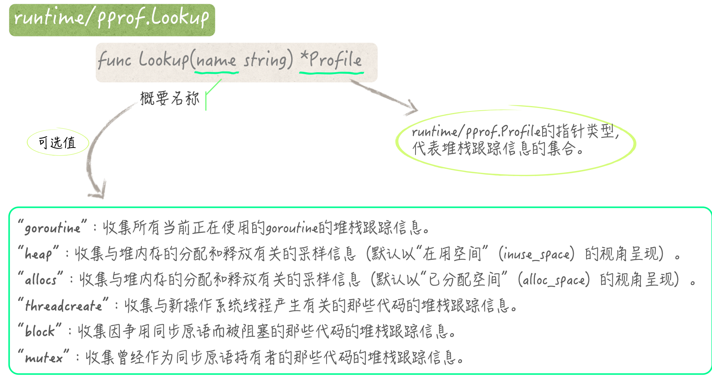

- 00 导读 写给0基础入门的Go语言学习者.md.html
- 00 导读 学习专栏的正确姿势.md.html
- 00 开篇词 跟着学，你也能成为Go语言高手.md.html
- 01 工作区和GOPATH.md.html
- 02 命令源码文件.md.html
- 03 库源码文件.md.html
- 04 程序实体的那些事儿（上）.md.html
- 05 程序实体的那些事儿（中）.md.html
- 06 程序实体的那些事儿 （下）.md.html
- 07 数组和切片.md.html
- 08 container包中的那些容器.md.html
- 09 字典的操作和约束.md.html
- 10 通道的基本操作.md.html
- 11 通道的高级玩法.md.html
- 12 使用函数的正确姿势.md.html
- 13 结构体及其方法的使用法门.md.html
- 14 接口类型的合理运用.md.html
- 15 关于指针的有限操作.md.html
- 16 go语句及其执行规则（上）.md.html
- 17 go语句及其执行规则（下）.md.html
- 18 if语句、for语句和switch语句.md.html
- 19 错误处理（上）.md.html
- 20 错误处理 （下）.md.html
- 21 panic函数、recover函数以及defer语句 （上）.md.html
- 22 panic函数、recover函数以及defer语句（下）.md.html
- 23 测试的基本规则和流程 （上）.md.html
- 24 测试的基本规则和流程（下）.md.html
- 25 更多的测试手法.md.html
- 26 sync.Mutex与sync.RWMutex.md.html
- 27 条件变量sync.Cond （上）.md.html
- 28 条件变量sync.Cond （下）.md.html
- 29 原子操作（上）.md.html
- 30 原子操作（下）.md.html
- 31 sync.WaitGroup和sync.Once.md.html
- 32 context.Context类型.md.html
- 33 临时对象池sync.Pool.md.html
- 34 并发安全字典sync.Map （上）.md.html
- 35 并发安全字典sync.Map (下).md.html
- 36 unicode与字符编码.md.html
- 37 strings包与字符串操作.md.html
- 38 bytes包与字节串操作（上）.md.html
- 39 bytes包与字节串操作（下）.md.html
- 40 io包中的接口和工具 （上）.md.html
- 41 io包中的接口和工具 （下）.md.html
- 42 bufio包中的数据类型 （上）.md.html
- 43 bufio包中的数据类型（下）.md.html
- 44 使用os包中的API （上）.md.html
- 45 使用os包中的API （下）.md.html
- 46 访问网络服务.md.html
- 47 基于HTTP协议的网络服务.md.html
- 48 程序性能分析基础（上）.md.html
- 49 程序性能分析基础（下）.md.html
- 尾声 愿你披荆斩棘，所向无敌.md.html
- 新年彩蛋 完整版思考题答案.md.html
- 捐赠
49 程序性能分析基础（下）
你好，我是郝林，今天我们继续分享程序性能分析基础的内容。
在上一篇文章中，我们围绕着“怎样让程序对CPU概要信息进行采样”这一问题进行了探讨，今天，我们再来一起看看它的拓展问题。
知识扩展
问题1：怎样设定内存概要信息的采样频率？
针对内存概要信息的采样会按照一定比例收集Go程序在运行期间的堆内存使用情况。设定内存概要信息采样频率的方法很简单，只要为runtime.MemProfileRate变量赋值即可。
这个变量的含义是，平均每分配多少个字节，就对堆内存的使用情况进行一次采样。如果把该变量的值设为0，那么，Go语言运行时系统就会完全停止对内存概要信息的采样。该变量的缺省值是512 KB，也就是512千字节。
注意，如果你要设定这个采样频率，那么越早设定越好，并且只应该设定一次，否则就可能会对Go语言运行时系统的采样工作，造成不良影响。比如，只在main函数的开始处设定一次。
在这之后，当我们想获取内存概要信息的时候，还需要调用runtime/pprof包中的WriteHeapProfile函数。该函数会把收集好的内存概要信息，写到我们指定的写入器中。
注意，我们通过WriteHeapProfile函数得到的内存概要信息并不是实时的，它是一个快照，是在最近一次的内存垃圾收集工作完成时产生的。如果你想要实时的信息，那么可以调用runtime.ReadMemStats函数。不过要特别注意，该函数会引起Go语言调度器的短暂停顿。
以上，就是关于内存概要信息的采样频率设定问题的简要回答。
问题2：怎样获取到阻塞概要信息？
我们调用runtime包中的SetBlockProfileRate函数，即可对阻塞概要信息的采样频率进行设定。该函数有一个名叫rate的参数，它是int类型的。
这个参数的含义是，只要发现一个阻塞事件的持续时间达到了多少个纳秒，就可以对其进行采样。如果这个参数的值小于或等于0，那么就意味着Go语言运行时系统将会完全停止对阻塞概要信息的采样。
在runtime包中，还有一个名叫blockprofilerate的包级私有变量，它是uint64类型的。这个变量的含义是，只要发现一个阻塞事件的持续时间跨越了多少个CPU时钟周期，就可以对其进行采样。它的含义与我们刚刚提到的rate参数的含义非常相似，不是吗？
实际上，这两者的区别仅仅在于单位不同。runtime.SetBlockProfileRate函数会先对参数rate的值进行单位换算和必要的类型转换，然后，它会把换算结果用原子操作赋给blockprofilerate变量。由于此变量的缺省值是0，所以Go语言运行时系统在默认情况下并不会记录任何在程序中发生的阻塞事件。
另一方面，当我们需要获取阻塞概要信息的时候，需要先调用runtime/pprof包中的Lookup函数并传入参数值"block"，从而得到一个*runtime/pprof.Profile类型的值（以下简称Profile值）。在这之后，我们还需要调用这个Profile值的WriteTo方法，以驱使它把概要信息写进我们指定的写入器中。
这个WriteTo方法有两个参数，一个参数就是我们刚刚提到的写入器，它是io.Writer类型的。而另一个参数则是代表了概要信息详细程度的int类型参数debug。
debug参数主要的可选值有两个，即：0和1。当debug的值为0时，通过WriteTo方法写进写入器的概要信息仅会包含go tool pprof工具所需的内存地址，这些内存地址会以十六进制的形式展现出来。
当该值为1时，相应的包名、函数名、源码文件路径、代码行号等信息就都会作为注释被加入进去。另外，debug为0时的概要信息，会经由protocol buffers转换为字节流。而在debug为1的时候，WriteTo方法输出的这些概要信息就是我们可以读懂的普通文本了。
除此之外，debug的值也可以是2。这时，被输出的概要信息也会是普通的文本，并且通常会包含更多的细节。至于这些细节都包含了哪些内容，那就要看我们调用runtime/pprof.Lookup函数的时候传入的是什么样的参数值了。下面，我们就来一起看一下这个函数。
问题 3：runtime/pprof.Lookup函数的正确调用方式是什么？
runtime/pprof.Lookup函数（以下简称Lookup函数）的功能是，提供与给定的名称相对应的概要信息。这个概要信息会由一个Profile值代表。如果该函数返回了一个nil，那么就说明不存在与给定名称对应的概要信息。
runtime/pprof包已经为我们预先定义了6个概要名称。它们对应的概要信息收集方法和输出方法也都已经准备好了。我们直接拿来使用就可以了。它们是：goroutine、heap、allocs、threadcreate、block和mutex。
当我们把"goroutine"传入Lookup函数的时候，该函数会利用相应的方法，收集到当前正在使用的所有goroutine的堆栈跟踪信息。注意，这样的收集会引起Go语言调度器的短暂停顿。
当调用该函数返回的Profile值的WriteTo方法时，如果参数debug的值大于或等于2，那么该方法就会输出所有goroutine的堆栈跟踪信息。这些信息可能会非常多。如果它们占用的空间超过了64 MB（也就是64兆字节），那么相应的方法就会将超出的部分截掉。
如果Lookup函数接到的参数值是"heap"，那么它就会收集与堆内存的分配和释放有关的采样信息。这实际上就是我们在前面讨论过的内存概要信息。在我们传入"allocs"的时候，后续的操作会与之非常的相似。
在这两种情况下，Lookup函数返回的Profile值也会极其相像。只不过，在这两种Profile值的WriteTo方法被调用时，它们输出的概要信息会有细微的差别，而且这仅仅体现在参数debug等于0的时候。
"heap"会使得被输出的内存概要信息默认以“在用空间”（inuse_space）的视角呈现，而"allocs"对应的默认视角则是“已分配空间”（alloc_space）。
“在用空间”是指，已经被分配但还未被释放的内存空间。在这个视角下，go tool pprof工具并不会去理会与已释放空间有关的那部分信息。而在“已分配空间”的视角下，所有的内存分配信息都会被展现出来，无论这些内存空间在采样时是否已被释放。
此外，无论是"heap"还是"allocs"，在我们调用Profile值的WriteTo方法的时候，只要赋予debug参数的值大于0，那么该方法输出内容的规格就会是相同的。
参数值"threadcreate"会使Lookup函数去收集一些堆栈跟踪信息。这些堆栈跟踪信息中的每一个都会描绘出一个代码调用链，这些调用链上的代码都导致新的操作系统线程产生。这样的Profile值的输出规格也只有两种，取决于我们传给其WriteTo方法的参数值是否大于0。
再说"block"和"mutex"。"block"代表的是，因争用同步原语而被阻塞的那些代码的堆栈跟踪信息。还记得吗？这就是我们在前面讲过的阻塞概要信息。
与之相对应，"mutex"代表的是，曾经作为同步原语持有者的那些代码，它们的堆栈跟踪信息。它们的输出规格也都只有两种，取决于debug是否大于0。
这里所说的同步原语，指的是存在于Go语言运行时系统内部的一种底层的同步工具，或者说一种同步机制。
它是直接面向内存地址的，并以异步信号量和原子操作作为实现手段。我们已经熟知的通道、互斥锁、条件变量、”WaitGroup“，以及Go语言运行时系统本身，都会利用它来实现自己的功能。

好了，关于这个问题，我们已经谈了不少了。我相信，你已经对Lookup函数的调用方式及其背后的含义有了比较深刻的理解了。demo99.go文件中包含了一些示例代码，可供你参考。
问题4：如何为基于HTTP协议的网络服务添加性能分析接口？
这个问题说起来还是很简单的。这是因为我们在一般情况下只要在程序中导入net/http/pprof代码包就可以了，就像这样：
import _ "net/http/pprof"
然后，启动网络服务并开始监听，比如：
log.Println(http.ListenAndServe("localhost:8082", nil))
在运行这个程序之后，我们就可以通过在网络浏览器中访问http://localhost:8082/debug/pprof这个地址看到一个简约的网页。如果你认真地看了上一个问题的话，那么肯定可以快速搞明白这个网页中各个部分的含义。
在/debug/pprof/这个URL路径下还有很多可用的子路径，这一点你通过点选网页中的链接就可以了解到。像allocs、block、goroutine、heap、mutex、threadcreate这6个子路径，在底层其实都是通过Lookup函数来处理的。关于这个函数，你应该已经很熟悉了。
这些子路径都可以接受查询参数debug。它用于控制概要信息的格式和详细程度。至于它的可选值，我就不再赘述了。它的缺省值是0。另外，还有一个名叫gc的查询参数。它用于控制是否在获取概要信息之前强制地执行一次垃圾回收。只要它的值大于0，程序就会这样做。不过，这个参数仅在/debug/pprof/heap路径下有效。
一旦/debug/pprof/profile路径被访问，程序就会去执行对CPU概要信息的采样。它接受一个名为seconds的查询参数。该参数的含义是，采样工作需要持续多少秒。如果这个参数未被显式地指定，那么采样工作会持续30秒。注意，在这个路径下，程序只会响应经protocol buffers转换的字节流。我们可以通过go tool pprof工具直接读取这样的HTTP响应，例如：
go tool pprof http://localhost:6060/debug/pprof/profile?seconds=60
除此之外，还有一个值得我们关注的路径，即：/debug/pprof/trace。在这个路径下，程序主要会利用runtime/trace代码包中的API来处理我们的请求。
更具体地说，程序会先调用trace.Start函数，然后在查询参数seconds指定的持续时间之后再调用trace.Stop函数。这里的seconds的缺省值是1秒。至于runtime/trace代码包的功用，我就留给你自己去查阅和探索吧。
前面说的这些URL路径都是固定不变的。这是默认情况下的访问规则。我们还可以对它们进行定制，就像这样：
mux := http.NewServeMux()
pathPrefix := "/d/pprof/"
mux.HandleFunc(pathPrefix,
func(w http.ResponseWriter, r *http.Request) {
name := strings.TrimPrefix(r.URL.Path, pathPrefix)
if name != "" {
pprof.Handler(name).ServeHTTP(w, r)
return
}
pprof.Index(w, r)
})
mux.HandleFunc(pathPrefix+"cmdline", pprof.Cmdline)
mux.HandleFunc(pathPrefix+"profile", pprof.Profile)
mux.HandleFunc(pathPrefix+"symbol", pprof.Symbol)
mux.HandleFunc(pathPrefix+"trace", pprof.Trace)
server := http.Server{
Addr: "localhost:8083",
Handler: mux,
}
可以看到，我们几乎只使用了net/http/pprof代码包中的几个程序实体，就完成了这样的定制。这在我们使用第三方的网络服务开发框架时尤其有用。
我们自定义的HTTP请求多路复用器mux所包含的访问规则与默认的规则很相似，只不过URL路径的前缀更短了一些而已。
我们定制mux的过程与net/http/pprof包中的init函数所做的事情也是类似的。这个init函数的存在，其实就是我们在前面仅仅导入”net/http/pprof”代码包就能够访问相关路径的原因。
在我们编写网络服务程序的时候，使用net/http/pprof包要比直接使用runtime/pprof包方便和实用很多。通过合理运用，这个代码包可以为网络服务的监测提供有力的支撑。关于这个包的知识，我就先介绍到这里。
总结
这两篇文章中，我们主要讲了Go程序的性能分析，提到的很多内容都是你必备的知识和技巧。这些有助于你真正地理解以采样、收集、输出为代表的一系列操作步骤。
我提到的几种概要信息有关的问题。你需要记住的是，每一种概要信息都代表了什么，它们分别都包含了什么样的内容。
你还需要知道获取它们的正确方式，包括怎样启动和停止采样、怎样设定采样频率，以及怎样控制输出内容的格式和详细程度。
此外，runtime/pprof包中的Lookup函数的正确调用方式也很重要。对于除了CPU概要信息之外的其他概要信息，我们都可以通过调用这个函数获取到。
除此之外，我还提及了一个上层的应用，即：为基于HTTP协议的网络服务，添加性能分析接口。这也是很实用的一个部分。
虽然net/http/pprof包提供的程序实体并不多，但是它却能够让我们用不同的方式，实现性能分析接口的嵌入。这些方式有的是极简的、开箱即用的，而有的则用于满足各种定制需求。
以上这些，就是我今天为你讲述的Go语言知识，它们是程序性能分析的基础。如果你把Go语言程序运用于生产环境，那么肯定会涉及它们。对于这里提到的所有内容和问题，我都希望你能够认真地去思考和领会。这样才能够让你在真正使用它们的时候信手拈来。
思考题
我今天留给你的思考题其实在前面已经透露了，那就是：runtime/trace代码包的功用是什么？
感谢你的收听，我们下期再见。
© 2019 - 2023 Liangliang Lee. Powered by gin and hexo-theme-book.